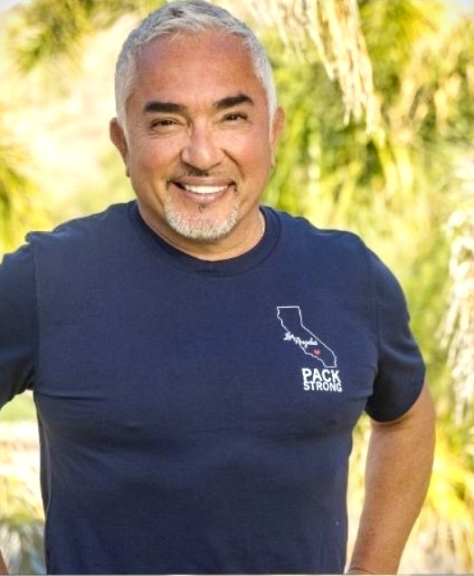
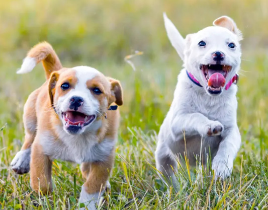
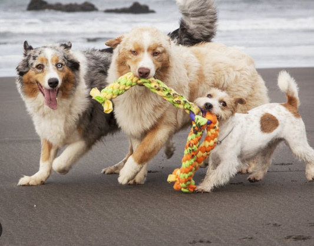
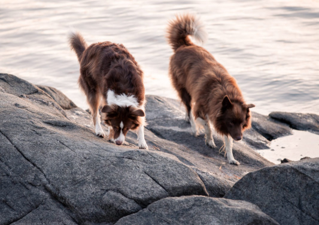
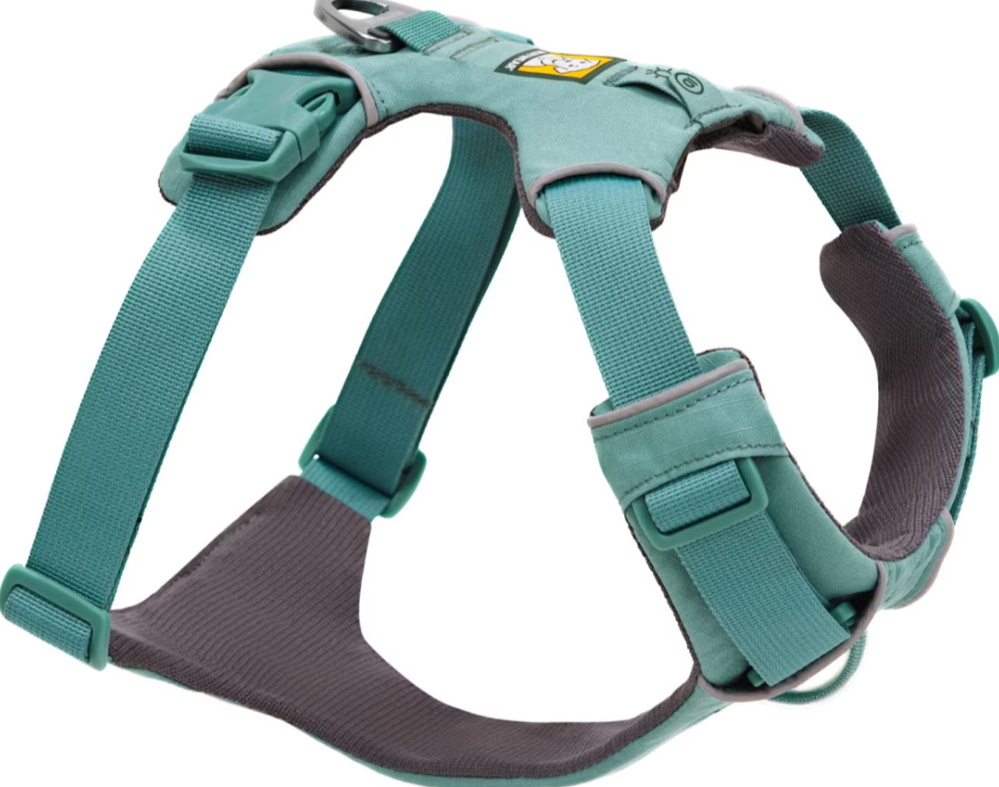
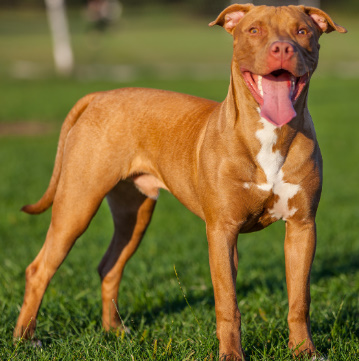
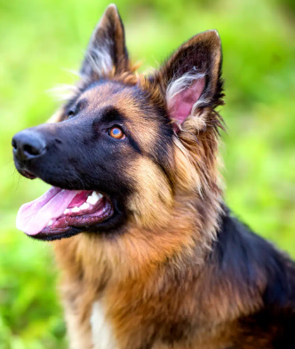
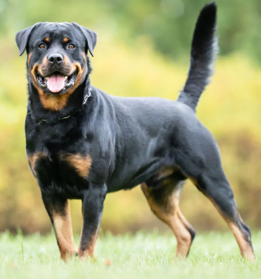

About Cesar Millan
Cesar Millan is a professional dog behaviorist with over 25 years of experience working with the toughest cases of dogs. He learned the fundamentals of dogs when he lived with his grandparents and saw how his family connected and communicated with the animals he was living with. After years of learning from his family, and at the age 13 he saw a show called Lassie and Rin Tin Tin. He was shocked by how those people on TV spoke to a dog, and they understood what it meant. That's where he got the inspiration and motivation. At the age of 21, when he was old enough to leave his hometown of Sinola, Mexico, goes to California to learn from the best trainers. When he arrived in San Diego, California, with no papers, didn't speak the English language, and was also homeless and lived under a bridge, he didn't see it as a hard thing to accomplish because his faith was so high and his mission to learn from Americans how to train dogs was his main focus. That's where he found a job at a grooming salon and was being an assistant to the professional groomers to help tame the dogs who were out of control; he instinctually knew what to do in those moments. He shocked the people and told them that they wanted him to stay. After working for 3 months at the grooming salon, he walked dogs off-leash and did that for a while until people noticed how amazing that looked. That's when he was asked later by people what would you like to do years from now. His answer was, "I would like my own TV show." It was written on the newspaper and a week later at an event he had a line of producers asking what is this show going to be all about. That's when we were officially called The Dog Whisperer.

(page 1)

Understanding Energy & Mindsets
What is Energy
To Cesar Millan, energy is everything when it comes to connecting with our dogs and communicating with our dogs. Energy is the universal dog language,
They will only follow their pack mates or their human family with good energy, like being calm and confident, which sends an automatic
field to your dog that you're in control of them and you provide the direction and protection. The dog will automatically follow your leadership because the enegry your projecting is
the way they can relate to and be familiar with. Therefore, you become the pack leader that your dog needs.
According to Cesar, having a confident mindset really gives you and your dog a powerful, clear direction.
For example, if you have a hard time walking your dog because your dog pulls
or tries to reach and bark at other dogs, which most likely happens because you're holding
the leash short and tense and already worrying about what the dog might do,
if you don't know the basics of walking your dog. Cesar says to walk shoulders up, head high!
So again Cesar pleads with us that by having the right energy and feeling confident about the
activity you're doing with your dog, you stay on your grounds and you lead your dog the right way.
Another key takeaway is that dogs will never be able to follow a
unstable dog or an unstable human because dogs will feel the unbalanced side of other dogs and their owners.
So if we don't use our energy and our mindset correctly, they will sense it seconds before you notice yourself
not feeling certain about what you do with your dog.

(page 2)
Cesar Millan talks a lot about calm, confident, or assertive leadership because without these two main ingredients you won't be able to fully convey to your dog what it is that you want your dog to listen to. He explains why people don't practice calm confidence, but it's a feeling you have to feel before you tell the dog what it is what your looking for. He also tells us that most people talk and yell and say the same word over and over again, which people think the dog will understand, but it actually does the complete opposite; it makes the dog excited or nervous, so they're not actually listening to you. Cesar always makes sure that you understand why it's crucial to have calm, confident leadership because the dog will only respond that same way to you because they reflect how we feel, what we think, and what we do. Cesar reveals that people have a hard time knowing how to feel either assertive or just confident. The words Cesar suggested people learn about made the world think "I don't want to be dominating my dog". Then Cesar answered and said the words you don't have to be so precise about what you think; as long as you feel the good energy inside of you, the dog will pick up on it and sense that you are in charge.

In any relationship, specifically with our dogs, to have balance and harmonious connection and communication with each other or with any species, in this case, a dog, we have to make sure we gain the trust and gain the respect, because the love is practically already there. Cesar elaborates on this concept because many people love the dog so much that they forget to establish earning the trust and the respect. There are so many things dogs teach us that we tend to forget, even just learning how to be with Mother Nature, but based on what Cesar teaches, the fundamentals of dogs and how they behave around each other. This basic formula may seem easier to follow and practice than you might think. This is how Cesar sees this "formula". For example, let's say you meet a quiet dog that is alert, or somewhat not acknowledging you; the first thing you do is you breathe, you picture what you want in your mind that will attract the dog to you, and then once the dog comes to you, you can give it affection. But you may ask, "Why is Cesar this important when you first meet a dog"? To be honest, it's pretty simple according to Cesar. Dogs by nature again want to feel your energy, so if you're tense, fearful, anxious, or excited, they're going to sense that, and based on their instinct there going to fight, flee, or avoid you. In this case, when you're meeting this dog for the very first time, and this dog is at the back of the pack, meaning he is more sensitive than the other positions in the pack. We will learn shortly what the rest are, but when we meet a dog in this setting, we first practice our breathing, which we automatically tell the dog, trust my presence, then your knowledge, visualize what you want to help this dog or give the dog what you want from him, and then the love, which is the last they sense: that you're loving this beautiful moment, feeling peace, love, and connection, FROM THE START!
(page 3)

THE THREE PACK POSITIONS
What are the 3 positions in a pack of dogs? According to Cesar, it’s Front of the Pack, Middle of the Pack, and Back of the Pack. These positions typically define the sensitivity levels of each pack of dogs. Dogs that are Front of the Pack are the most powerful and confident. Middle of the Pack dogs are more balanced — their life is based on just being happy, and their job is to bring joy into the pack. Lastly, the Back of the Pack: they are shy and alert. So when it comes to adopting a dog, if the owner didn’t educate themselves on what they’re getting, Cesar teaches that if you don’t pay attention to where in the pack the dog is, the dog will sense your lack of understanding about them. It will be harder for you and your lifestyle. Focus and ask yourself: What energy do I have 24/7? Am I low, medium, or high energy? This will help you reflect on what energy you’re bringing home. Dogs in the wild depend on each other by communicating. Every dog has a Spirit, Instinct, and Heart, and they use their mind to always do something productive in their lives.

Follow, Play, Explore!



Cesar Millan goes into depth on the importance of the activities dogs do when they first come into the world. The most important thing to remember for us to learn is how to maintain the structure of how dogs follow, play, and explore. Cesar says the reason he defined follow, play, and explore is for people to understand that puppies, when they're getting to know the world and their parents, first follow their moms, play with their moms, and explore with their moms. These activities lead puppies to adolescents to maintain healthy growth and stability when they migrate with their pack and migrate in the world. But you might come to think of it that when Cesar talks about how we help develop our dogs in the world, we tend not to practice what the dog needs, or we do the complete opposite. Instead of letting the dog follow their pack, play with their pack, and explore with each other, we actually do it backwards. Cesar gives us an example of when we walk our dogs and the dog is in the front, and the human is in the back. How is this so? Well, when the human first opens the door, the human goes, according to Cesar, "DO YOU WANT TO GO FOR A WALK"! Cesar even mentions that sometimes, this is when the dog first wakes up in the morning, then the dog runs out the door and the human gets pulled and dragged as soon as they start to walk. This is caused by the human not understanding the power of silence and being calm; then when the human opens the door, it's complete chaos. So Cesar gives us the big picture of what goes on before the person and the dog go for a walk, but what really surprised him was that when the dog is in the front it starts to explore and play with other dogs and gets so excited that when the dog goes back home to eat, he still has all this energy. So, based on Cesar's philososphy how to play these activities correctly with our dogs is to first practice being calm at the door, waiting for the dog to become calm to leave without saying a word so the dog senses your silence, and by that time, when you know the basics of handling the leash, we will get to that later; we are leading our dog. What's so funny is that we don't even realize that half of the problems, when we give the dog the chance to follow, play, and explore with you, go wrong at the DOOR.
"A tool for the body, or A tool for the Mind"
Have you ever wondered why your dog always pulls on the leash, or when you try to recall your dog on the leash, they sometimes won't respond? In Cesar's philososphy he talks about the biggest mistake people make when they are trying to use the leash with their dog, cause it all starts with the question "What leash are you using"? The answer Cesar gets is either an anti-pull harness, a flexi leash, or a simple collar with a leash attached. So why do people complain that their dogs are misbehaving on the leash? Because people only think guiding the dog with its body is the best way when your dog starts to pull you, and you pull back thinking it will make your dog stop, but in reality Cesar says that when you pull back your basically encouraging your dog to pull and saying "go for it". Cesar tells people the best way to enjoy your walk starts with using the right leash. The slip leash is going to be your lifesaver. Why? Because it controls the mind, not the body, which you have much more control. The science of the slip leash is that it forces the mind to relax, and it gives your dog a complete sense of direction because the leash is placed on the very top of the dog's neck, plus doing the action of pulling up but gently, the dog immediately stops pulling. One thing to remember as well, Cesar reminds people that the leash isn't the only thing that conveys to your dog to listen to you. Without the right energy, your dog won't take you seriously or won't listen, because what you feel takes a trip through the leash, making it confusing for your dog to accept clear directions.
 style="width: 300px;" max-width:>
style="width: 300px;" max-width:>


style="width: 300px;"max-width>"Is it the breed"? Or is it really who raised the breed?
For many, many years we have brought up dogs into the world by teaching unconsciously that if dogs feel nervous or tense, excited, or dominant we give the dog affection, telling them "it's ok; don't feel that way". In reality, we are saying Feel this way. Another thing to memorize is that Adult dogs are with their puppies they will never nurture their pups when they are being disrespectful, because having structure is where pups to adolescents learn what's right and what's wrong. Dogs don't have a choice in life; we do. So when we nurture a state of mind, any kind of breed, we think by saying stop or no, or it's okay to them, they associate the word and the intention with you agreeing with what they do. AND WE DON'T WANT THAT. Cesar believes and teaches us that we cannot blame them for being aggressive, nervous, hyper, or avoidant toward us. Why? Because dogs do react to what we feel, not what we think, so they do not rationalize, meaning they don't know that if your dog bites a person, or worse case bites another dog, that you can get sued. Dogs have no idea that there's a negative outcome to it. What dogs do know is that if you are not prepared to be calm when they are about to meet another dog, bad things can happen. It's the humans' responsibility to make sure that they envision only good, respectful behavior. Now, this brings us to the next section. Cesar heard all the stereotypes of dogs, specifically Pitbulls, Rottweilers, and German Shepherds are "aggressive" or "dangerous".



style="width: 100px;"max-width:> Cesar was shocked when he kept hearing this, and from his own personal, common-sense knowledge that we shouldn't just think of a certain breed and assume they're dangerous or aggressive because he guarantees you that if you learn to raise your dog properly, cause these breeds are not aggressive but yes powerful, we humans, have to learn how to redirect the power into something good. Like, for example, people who train these certain breeds to fight in a dog fighting rings, and people back in the day when they made these dogs fight they were doing it in an illegal way! and we still blame them for our philososphy and our wrong actions. So if you do hear these myths, please take Cesar's word for it, because the next time if you do see a dog just walking or maybe he's in critical need of help, who is a Pitbull, and you think he's going to hurt you or whatever your mind is thinking, just pause and talk to yourself, and ask yourself, if you don't help this dog, this dog won't survive, cause that dog is like the rest of them. You see, we forget that Dog is God backwards and we don't see what we are doing as bullies to shame certain breeds due to our actions, cause really all dogs want is the right human, and to be loved by the right human.(page 4)
I hope my interesting topic found you to learn and to feel inspired, and to understand Dog Psychology from the Dog Whisperer himself! The last most important key takeaways I want everyone reading this to remember... "Dogs are born Nose, Eyes, Ears" " You must achieve what you learn to teach the world about good energy and living correctly by Cesar's values, and to always keep in mind that dogs are our mirrors." " Walk Shoulders Up Head High" " Always walk calm, confidently"
Contact & Pack Connect
Have questions to ask Cesar Millan, post it here; we would love to help you!